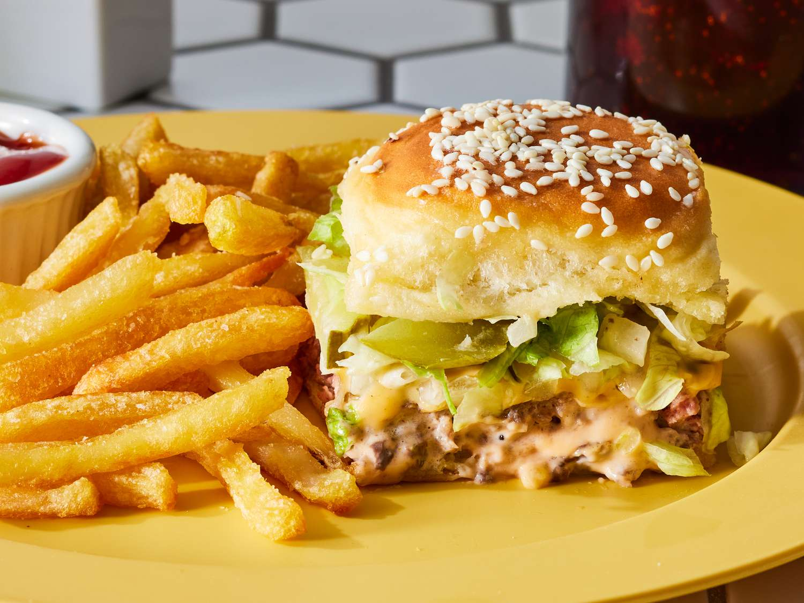

Big Mac Sliders Recipe
Home

Description
These fun big mac sliders are easy to make and the perfect appetizer
for game day or any other viewing party.
Ingredients
- 1 pound ground chuck
- 3/4 teaspoon kosher salt
- 1/2 teaspoon freshly ground black pepper
- 1/2 teaspoon garlic powder
- cooking spray
- 1 (12 ounce) package Hawaiian Sweet Dinner Rolls (such as King's Hawaiian)/li>
- 1/3 cup Big Mac Sauce (recipe below)
- 6 (1/2 ounce each) American cheese slices
- 2/3 cup drained dill pickle chips
- 1/3 cup finely chopped yellow onion (from 1 small 5 ounce onion)
- 2 tablespoons (1 ounce) unsalted butter, melted
- 1 tablespoon sesame seeds
- 1 cup packed shredded iceberg lettuce (from 1 small [1 pound] head)
Big Mac Sauce
- 1/2 cup mayonnaise
- 1 1/2 tablespoons ketchup
- 1 tablespoon sweet pickle relish
- 1/4 teaspoon garlic powder
- 1/4 teaspoon kosher salt
Steps
-
Preheat oven to 350 degrees F (175 degrees C). Gather all ingredients.
-
Line a large-rimmed baking sheet with aluminum foil.
Press ground chuck into a thin, even 11- x 9-inch rectangle on prepared baking sheet.
Sprinkle evenly with salt, pepper, and garlic powder.
-
Bake in preheated oven until a thermometer inserted into thickest portion of
beef registers 140°F to 145°F, about 10 minutes. Using 2 large spatulas,
transfer beef to a cutting board lined with paper towels; discard foil.
-
Line same baking sheet with a new piece of foil; lightly coat with cooking spray.
Using a serrated bread knife, cut rolls in half horizontally,
keeping top halves and bottom halves intact.
Place the bottom half of rolls cut-side up on prepared baking sheet.
-
Spread Big Mac Sauce evenly over bottom half of rolls.
-
Place beef patty over sauce, topping evenly with cheese slices, pickles, and onion.
-
Place top half of rolls over pickles and onions.
Brush tops and sides of rolls with melted butter,
and sprinkle evenly with sesame seeds.
-
Bake in preheated oven until top buns are golden brown and cheese is melted,
about 10 minutes.
-
Carefully remove bun tops, sprinkle lettuce in an even layer, and replace bun tops.
-
Cut sliders into 12 portions; serve with additional Big Mac Sauce.
Sauce
-
Whisk together all ingredients in a small bowl until fully combined.
Chill in an airtight container for up to 5 days.